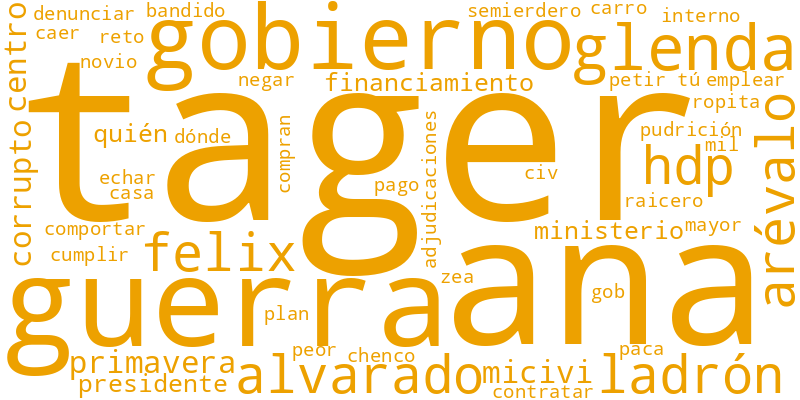
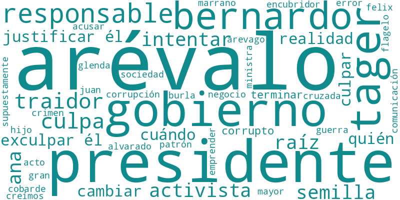
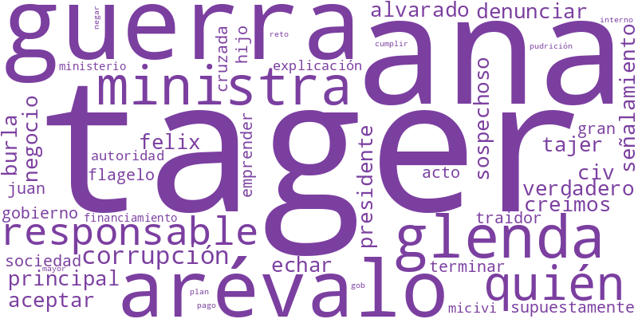
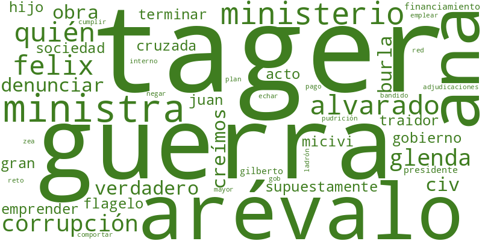
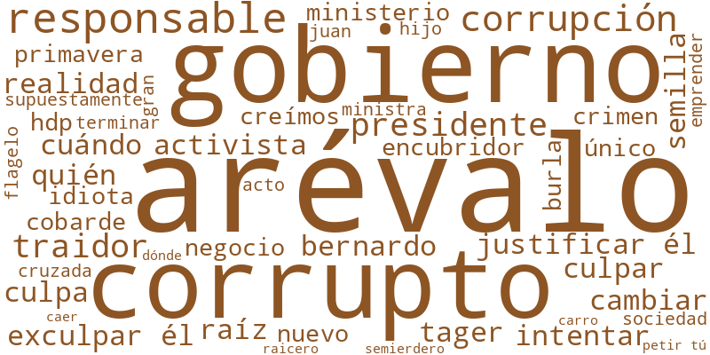

El 3 de octubre, La Hora publicó «Puentes de Primavera sobrevalorados: así se aumentaron los costos y se cambiaron las bases de la licitación». La nota señala sobrecostos en puentes de la DGC y sitúa los cambios en la cúpula del MICIVI, con mención de Gilberto Guerra, principal asesor de la ministra Norma Zea.
Este análisis sigue seis publicaciones en X: dos de @lahoragt y cuatro de cuentas que la citaron o la ampliaron (@DarwinHK, @mmendoza_GT, @RMendezRuiz y @VicenteCarrera_). Se recogieron 35 respuestas y 21 citas de 45 cuentas, y la red de seguidores de cada una. La conversación es pequeña: la red refleja quiénes rodean a esas 45 cuentas, no el alcance total de la nota.
Una cuenta se marca como inorgánica si sigue a muchas más cuentas de las que la siguen (más de 500 seguidos y diez veces más seguidos que seguidores) o si interactúa mucho sin recibir interacción. Es un criterio de comportamiento, no una prueba de automatización.
Casi todas las cuentas marcadas están en la periferia: son seguidores de los participantes, no autores de mensajes. Solo 1 de las 45 cuentas que escribieron cumple el criterio.

Cuentas en este grupo: 11
@lahoragt es el único medio que publicó en el núcleo de esta conversación. Su tuit principal recibió 4 respuestas y 10 citas en X. El tuit de seguimiento (#LHPuentesdePrimavera, sobre los Q89 millones de diferencia calculados por técnicos de la DGC) recibió 2 respuestas y ninguna cita.
La conversación creció en las citas más que en las respuestas al medio. Las citas con más alcance fueron las de @DarwinHK (383 me gusta, 12,530 vistas), @mmendoza_GT (189 me gusta, 7,874 vistas) y @pchicola (151 me gusta, 3,215 vistas), contadas al momento de la recolección (4 de octubre).

Cuentas en esta narrativa: 19
Es la narrativa más extendida: aparece en 26 de los 56 mensajes, de 19 cuentas. Su eje es quién responde por el caso. Una parte de la conversación rechaza que la responsabilidad recaiga en Tager y la atribuye al presidente: «La responsabilidad no se delega. El responsable es el señor a quien el pueblo le otorgó el poder de tomar las decisiones» (@HaniaSieraDavid).
La cuenta @JJMONDAL publicó el mismo texto tres veces, en respuestas y citas a distintas semillas: «Bernardo Arévalo es el Presidente y el responsable de su Gobierno».

Cuentas en esta narrativa: 13
Aparece en 15 mensajes de 13 cuentas. Sostiene que la secretaria privada Ana Glenda Tager ejerce el control real del MICIVI. La formulan sobre todo las dos citas con más alcance: «La principal responsable tiene nombre: Ana Glenda Tager» (@DarwinHK) y «¿Y adivinen quién habría abogado y buscado financiamiento para que Guerra siga al frente del MICIVI? Ana Glenda Tager» (@mmendoza_GT).
Otras cuentas la convierten en una pregunta al presidente: «¿O la Tager tiene más autoridad que él?» (@PattyPe99872402).

Cuentas en esta narrativa: 13
Aparece en 15 mensajes de 13 cuentas. Se centra en la permanencia de Gilberto Guerra en el ministerio y en su relación con el exministro Félix Alvarado, quien lo había denunciado. Es la narrativa más cercana al contenido de la nota y la que menciona más instituciones: @CNCguatemala, @Contraloria_gt, @MPguatemala y @CIV_Guatemala.
«La @CNCguatemala debería denunciar a Guerra y a Ana Glenda y pronunciarse sobre el caso» (@pchicola).

Cuentas en esta narrativa: 16
Aparece en 22 mensajes de 16 cuentas. Lee el caso como muestra de corrupción del gobierno en conjunto, con referencias irónicas a la «primavera», Semilla y Raíces. Predomina en las citas al tuit de @lahoragt: «Estela de corrupción desde el centro de gobierno» (@B_ehel).
Es la narrativa con más lenguaje descalificador y la que menos se refiere a los datos de la licitación.
La red contiene 1,185 cuentas inorgánicas (11.38%).
Las cuentas inorgánicas se concentran entre los seguidores de unos pocos participantes (@Corleone_62, @ASolaresM, @MariaBonita9697). Eso indica que en su entorno abundan perfiles de seguimiento masivo, pero no que esos perfiles hayan amplificado los mensajes de esta conversación.
Se identificaron las 20 cuentas con mayor centralidad como las que más impulsan las narrativas del debate.
Aquí la centralidad debe leerse con cautela: de cada participante se recogieron hasta 200 seguidores, así que casi todos quedan con un grado parecido (entre 200 y 226). El peso real se ve mejor en el alcance de los mensajes: las citas de @DarwinHK, @mmendoza_GT y @pchicola, cuentas con entre 47,000 y 174,000 seguidores, fijaron el marco que retomó el resto.
Esta conversación puede compararse con otras dos en X en torno a la Secretaría Privada:
De las 45 cuentas que escribieron aquí, 16 ya habían participado en la conversación sobre la USAC, y 4 comentaron también la nota del 17 de septiembre.
| Cuenta | Mensajes aquí | Nota 17-sep | USAC |
|---|---|---|---|
| @B_ehel | 2 | sí | participante |
| @Elbuscador2576 | 1 | sí | participante |
| @inesdiariogt | 1 | sí | participante |
| @MariaBonita9697 | 1 | sí | participante |
| @DarwinHK | 2 | – | hub |
| @ErickMonte64123 | 2 | – | participante |
| @Zacapa1971 | 2 | – | participante |
| @ASolaresM | 1 | – | hub |
| @Elliott2014R | 1 | – | participante |
| @ernestoalpo | 1 | – | participante |
| @HaniaSieraDavid | 1 | – | participante |
| @La_ReVoluZzion | 1 | – | hub |
| @LesterDeLeon76 | 1 | – | participante |
| @losArzuTeEspian | 1 | – | hub |
| @mmendoza_GT | 1 | – | participante |
| @PCampoll | 1 | – | participante |
Coincidencia por nombre de usuario. «hub» indica que la cuenta estuvo entre las más centrales de una narrativa en la red de la USAC. Una coincidencia muestra presencia repetida en el debate, no coordinación.